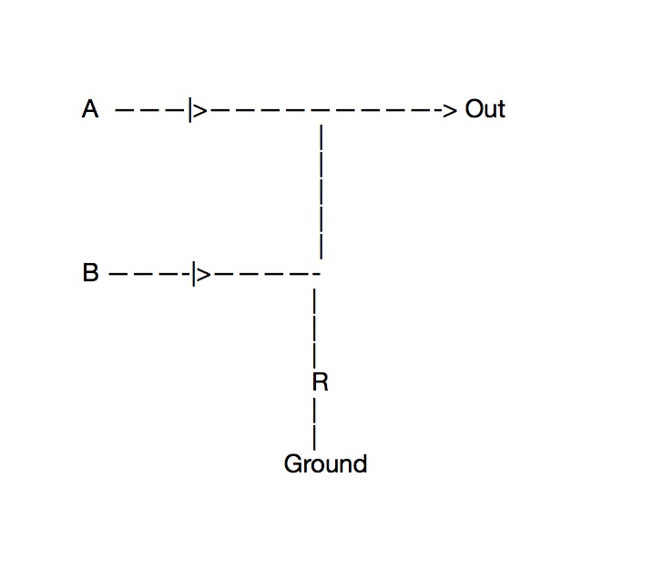
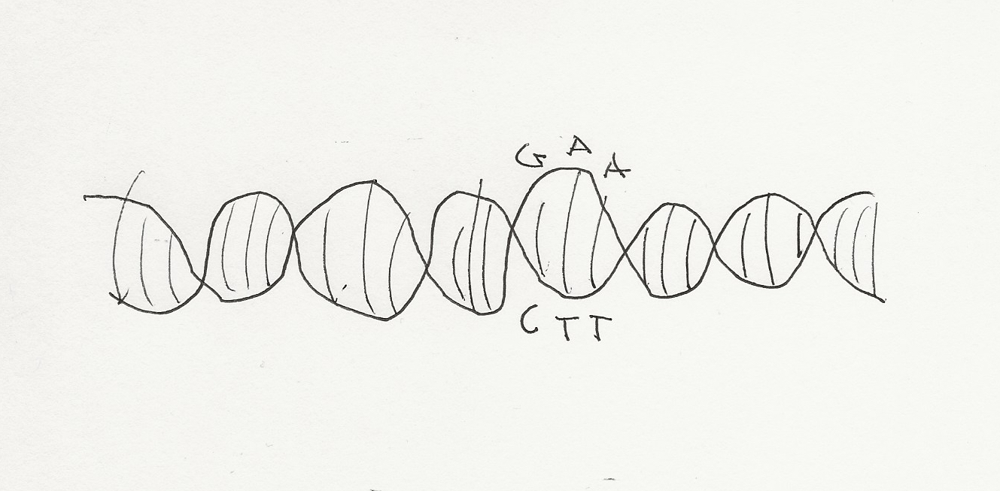

In order to understand biological life, how it might have originated and the mystery of how it functions by looking at artificial intelligence (AI) we look at several factors: How they both encode and function (binary and trinary, or energy). 2. The structure they have in common with one another (golden ratio). 3. What makes them dynamic (symmetry breaking). 4. What the structure of their dynamics does (molar mass, density, size).
The mystery of biological life is that while we know what the different parts of a cell do, we don’t now how they do it, or what drives them. The brain sends electrochemical stimuli along the nerves to activates muscles in the arm to contract when the brain wants them to say, lift something. But in cell production, where old skin cells die and and new ones form with everything inside them, from DNA to RNA, a nucleus, mitochondria, and ribosomes, we know for instance that the DNA is unzipped in the old cell, copied (zipped) , and becomes part of a new skin cell after it forms in cell division. But what makes, and drives the ribosomes and RNA, for example to know what to do to in order to form the new cells and their organelles? It is as if each cell has a mind of its own. Yet nothing is there to suggest what might make it alive like this, at least that we have been able to find.
What about computers? This is artificial intelligence (AI). We can compare AI to biological life: AI is a series of switches that are either off or on, 0 or 1. In ascii code the STX key is encoded with the number 2, written 10 in binary, a one and a zero, a switch that is one on, one off. So, If I press the STX key, that is one on and one off, a one at “A” and on, and a zero, at “B” or off in an OR gate, this will output a voltage at “Out” and this will give the electric impulse to carry out what the STX key does.

But what is the mind that allows this electronic cell to activate the STX key. It is the user. And there has to be electric current sent through A (energy), and ultimately it is humans who sourced the energy, perhaps with windmills that created the electric potential. We might say, then, that humans are the source of electronic life, or AI. We return to our original question: What is the mind of the a biological cell? For computers it is the human, might we say for the human it is what we call God? That god is an external source bringing our cell organelles to life.

While AI encodes its keys with binary expressions; a string of zeros and ones, such as above, biological life encodes itself with chemical pairs made of adenine, guanine, cytosine, and thymine (A. G, C, T). This occurs in pairs of three (codons). A always pairs with T and G with C.
We should ask: If electricity is the driving force behind artificial intelligence because resistors, diodes, and transistors are activated by electricity, then what is the nature of the driving force behind biological life if its components are chemical in nature? Could it be light, because it is massless energy. Are we light beings?
If we are to look at how AI works, since an external sentience (humans) sends energy (electricity) through its wires to make it do things, then perhaps an external sentience (God) sends energy (type unknown) through the organelles of the living cells that comprise biological life. Further, since humans designed AI, did God design humans?
Since each character on the keyboard is characterized by 8 bits (eight zeros and ones) called a byte. Then there are 2^8=256 AI codes. Since there are 4 nucleotides to make codons of three pairs, then there are 4^3=64 biological codons.
256/64=4